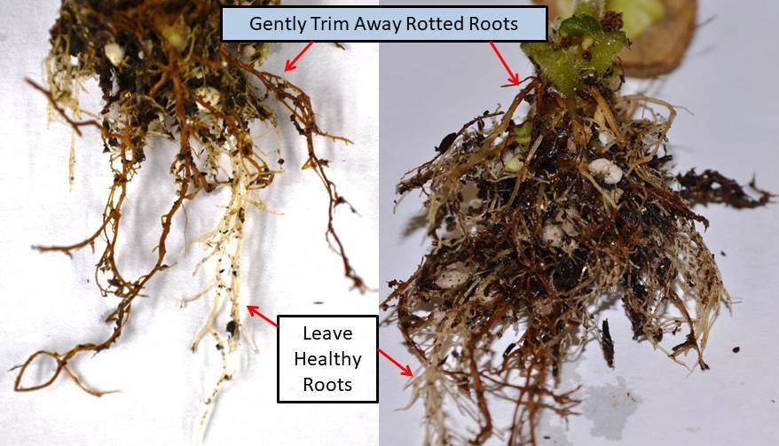

Smart Soil Monitoring System
Information data
ความชื้นในดินคืออะไร？
What is soil moisture？
ความชื้นในดิน (Soil Moisture) มีความหมายที่แตกต่างกันในแต่ละความคิดคน ตัวอย่างเช่นแนวคิดของเกษตรกรเกี่ยวกับ ความชื้น ในดินจะแตกต่างจากผู้จัดการทรัพยากรน้ำ หรือนักพยากรณ์อากาศ อย่างไรก็ตามโดยทั่วไปความชื้นในดินคือน้ำที่กักเก็บไว้ในช่องว่างระหว่าง อนุภาคของดิน ความชื้นในดินคือน้ำที่อยู่ในชั้นบนของดิน 10 ซม. ในขณะที่ความชื้นในดินบริเวณราก คือน้ำที่มีอยู่ในพืช ซึ่งโดยทั่วไปจะอยู่ในดินชั้นบน 200 ซม.
Soil Moisture has different meanings in different people's minds. For example, a farmer's concept of soil moisture differs from a water resource manager. or a weather forecaster Generally, however, soil moisture is water that is retained in the spaces between soil particles. Soil moisture is water that is 10 cm in the top layer of soil, while soil moisture is at the roots. is the water contained in plants which is generally in the topsoil of 200 cm.
ความสำคัญของความชื้นในดินคืออะไร?
What is the importance of soil moisture?
ปริมาณความชื้นหรือน้ำในดินเป็นสิ่งสำคัญที่ต้องรู้เนื่องจาก
The amount of moisture or water in the soil is important to know because
ระดับความชื้นที่พืชสามารถรับได้จะคิดเป็นเปอร์เซ็นต์ ดังนี้
The moisture level that a plant can accept is expressed as a percentage:
1.ความชื้น 80% - 100% : สภาวะอันตรายต่อพืช
1.Moisture 80% - 100% : conditions harmful to plants
2.ความชื้น 70% - 79% : สภาวะดินแฉะ
2.Moisture 70% - 79% : wet soil condition
3.ความชื้น 50% -69% : สภาวะที่พืชชอบ
3. Moisture 50% -69% : conditions that plants like
4.ความชื้น 40% - 49% : สภาวะแห้ง
4.Moisture 40% - 49% : dry condition
5.ความชื้น 0% - 39% : สภาวะวิกฤติ
5.Moisture 0 % - 39% : critical condition